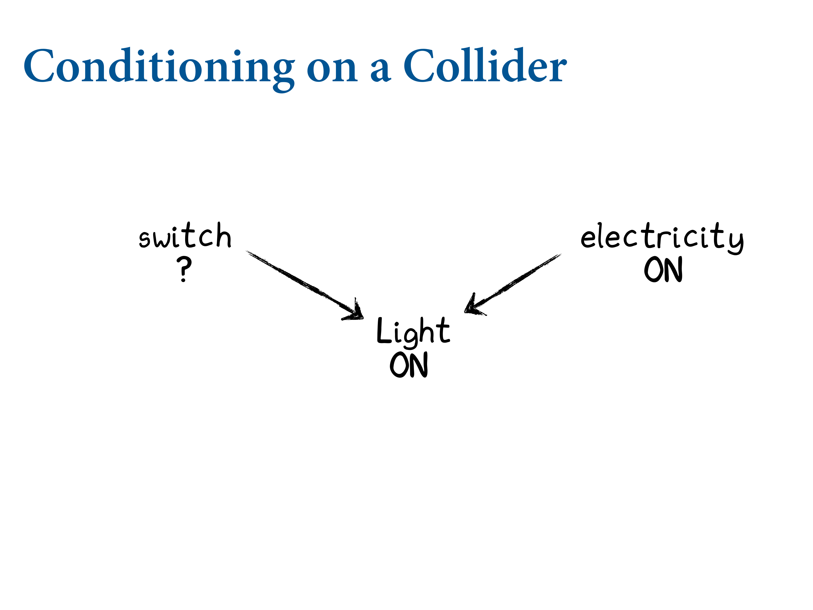

6.3 Collider bias

This is where the selection effect comes from. Like the fork but in reverse. Here Z is a common result of X and Y. X and Y are really independent, but if you condition on Z, it creates a spurious causal connection between X and Y. There’s this “finding out” effect.


This is the finding out effect. Works for continuous variables as well.

Both influence publication.

So if it’s been published in Nature and isn’t trustworthy, can you tell me how newsworthy it is?

There are lots of effects like this that happen all the time. Being tall is definitely causatively-speaking an advantage. The taller you are, the easier to score field goals. But conditional on being a professional player, there’s no correlation between height and shooting percentage. Because the shorter players are compensating by being amazing in other ways. They’ve been distorted by the selection effects.
6.3.1. Collider of false sorrow

Let’s do an example. Image this causal graph at the bottom. Imagine it’s true that getting married is positively, causally associated with happiness, and age. Now our question is, is there any causal impact of age on happiness? Here’s a simulation where it’s totally spurious.
![Here the simulation is slightly different to the usual `rnorm`. Here's the algorithm. Uniform happiness at birth. Distributed from 0 to 1. Reality is more complicated, even harder to figure out. At 18 years old, you're eligible to marry. Then you have your coin-flip chance to get married. The chance is proportional to your happiness, which is constant. Age itself doesn't cause marriage, but each year you're alive you have another chance to get married. Married people remain married unto death. Then everyone moves to Spain. 1300 people, 3 variables, over 1000 years.](slides/L06/24.png)
Here the simulation is slightly different to the usual rnorm. Here’s the algorithm. Uniform happiness at birth. Distributed from 0 to 1. Reality is more complicated, even harder to figure out. At 18 years old, you’re eligible to marry. Then you have your coin-flip chance to get married. The chance is proportional to your happiness, which is constant. Age itself doesn’t cause marriage, but each year you’re alive you have another chance to get married. Married people remain married unto death. Then everyone moves to Spain. 1300 people, 3 variables, over 1000 years.
d <- rethinking::sim_happiness(seed = 1977, N_years = 1000)
head(d)## age married happiness
## 1 65 0 -2.0000000
## 2 65 0 -1.7894737
## 3 65 1 -1.5789474
## 4 65 0 -1.3684211
## 5 65 0 -1.1578947
## 6 65 0 -0.9473684Summarise the variables:
d %>%
pivot_longer(everything()) %>%
group_by(name) %>%
tidybayes::mean_qi(value) %>%
mutate_if(is.double, round, digits = 2)## # A tibble: 3 × 7
## name value .lower .upper .width .point .interval
## <chr> <dbl> <dbl> <dbl> <dbl> <chr> <chr>
## 1 age 33 2 64 0.95 mean qi
## 2 happiness 0 -2 2 0.95 mean qi
## 3 married 0.3 0 1 0.95 mean qid %>%
mutate(married = factor(married,
labels = c("unmarried", "married"))) %>%
ggplot(aes(x = age, y = happiness, color = married)) +
geom_point(size = 1.75) +
scale_color_manual(NULL, values = c("grey85", "forestgreen")) +
scale_x_continuous(expand = c(.015, .015)) +
theme(panel.grid = element_blank())Figure 6.5
Rescale age so that the range from 18 to 65 is one unit, i.e. A ranges from 0 to 1, where 0 is age 18 and 1 is age 65:
d2 <-
d %>%
filter(age > 17) %>%
mutate(a = (age - 18) / (65 - 18))
head(d2)## age married happiness a
## 1 65 0 -2.0000000 1
## 2 65 0 -1.7894737 1
## 3 65 1 -1.5789474 1
## 4 65 0 -1.3684211 1
## 5 65 0 -1.1578947 1
## 6 65 0 -0.9473684 1Save mid as a factor to make the results easier to interpret:
d2 <-
d2 %>%
mutate(mid = factor(married + 1, labels = c("single", "married")))
head(d2)## age married happiness a mid
## 1 65 0 -2.0000000 1 single
## 2 65 0 -1.7894737 1 single
## 3 65 1 -1.5789474 1 married
## 4 65 0 -1.3684211 1 single
## 5 65 0 -1.1578947 1 single
## 6 65 0 -0.9473684 1 singleApproximate the posterior
b6.9 <-
brm(data = d2,
family = gaussian,
happiness ~ 0 + mid + a,
prior = c(prior(normal(0, 1), class = b, coef = midmarried),
prior(normal(0, 1), class = b, coef = midsingle),
prior(normal(0, 2), class = b, coef = a),
prior(exponential(1), class = sigma)),
iter = 2000, warmup = 1000, chains = 4, cores = 4,
seed = 6,
file = "fits/b06.09")print(b6.9)## Family: gaussian
## Links: mu = identity; sigma = identity
## Formula: happiness ~ 0 + mid + a
## Data: d2 (Number of observations: 960)
## Samples: 4 chains, each with iter = 2000; warmup = 1000; thin = 1;
## total post-warmup samples = 4000
##
## Population-Level Effects:
## Estimate Est.Error l-95% CI u-95% CI Rhat Bulk_ESS Tail_ESS
## midsingle -0.23 0.06 -0.36 -0.11 1.00 1649 2365
## midmarried 1.26 0.09 1.09 1.43 1.00 1665 2341
## a -0.75 0.11 -0.97 -0.53 1.00 1501 1925
##
## Family Specific Parameters:
## Estimate Est.Error l-95% CI u-95% CI Rhat Bulk_ESS Tail_ESS
## sigma 0.99 0.02 0.95 1.04 1.00 2380 2263
##
## Samples were drawn using sampling(NUTS). For each parameter, Bulk_ESS
## and Tail_ESS are effective sample size measures, and Rhat is the potential
## scale reduction factor on split chains (at convergence, Rhat = 1).The model is quite sure that age is negatively associated with happiness. We’d like to compare the inferences from this model to a model that omits marriage status:
b6.10 <-
brm(data = d2,
family = gaussian,
happiness ~ 0 + Intercept + a,
prior = c(prior(normal(0, 1), class = b, coef = Intercept),
prior(normal(0, 2), class = b, coef = a),
prior(exponential(1), class = sigma)),
iter = 2000, warmup = 1000, chains = 4, cores = 4,
seed = 6,
file = "fits/b06.10")print(b6.10)## Family: gaussian
## Links: mu = identity; sigma = identity
## Formula: happiness ~ 0 + Intercept + a
## Data: d2 (Number of observations: 960)
## Samples: 4 chains, each with iter = 2000; warmup = 1000; thin = 1;
## total post-warmup samples = 4000
##
## Population-Level Effects:
## Estimate Est.Error l-95% CI u-95% CI Rhat Bulk_ESS Tail_ESS
## Intercept -0.00 0.08 -0.15 0.15 1.00 1514 1752
## a 0.00 0.13 -0.25 0.25 1.00 1626 2112
##
## Family Specific Parameters:
## Estimate Est.Error l-95% CI u-95% CI Rhat Bulk_ESS Tail_ESS
## sigma 1.22 0.03 1.17 1.27 1.00 2363 1956
##
## Samples were drawn using sampling(NUTS). For each parameter, Bulk_ESS
## and Tail_ESS are effective sample size measures, and Rhat is the potential
## scale reduction factor on split chains (at convergence, Rhat = 1).The collider is marriage status. It is a common consequence of age and happiness.
![Here's the system. Run a regression where we take happiness. Happiness is the outcome, then the linear model `mu`, the slope `a` which is age. That's the exposure we're interested in. And we know the marriage status, so perhaps we control for that. (No, that's the wrong thing to do, as we'll see.) Created an index variable. Then put that in as a control. We see that single people are less happy. Regression models don't have arrows. It's not in the Bayesian network; that's what the DAG does. `a[2]` is married individuals. Positive `mu`. The slope is solidly negative. But this is a spurious correlation by conditioning on a collider.](slides/L06/25.png)
Here’s the system. Run a regression where we take happiness. Happiness is the outcome, then the linear model mu, the slope a which is age. That’s the exposure we’re interested in. And we know the marriage status, so perhaps we control for that. (No, that’s the wrong thing to do, as we’ll see.) Created an index variable. Then put that in as a control. We see that single people are less happy. Regression models don’t have arrows. It’s not in the Bayesian network; that’s what the DAG does. a[2] is married individuals. Positive mu. The slope is solidly negative. But this is a spurious correlation by conditioning on a collider.

We know that happiness doesn’t change and doesn’t decline with age, because that’s how we coded it. But if we stratify by marriage status, it does. Each point is a person. Each year 20 individuals are born. Happiness is uniformly distributed and constant. Blue filled are married. Starting early on the blue points are only at the top. But over time, indiviuals who are less happy will also get married. By 65, most of the population in the simulation is married.

Now if we draw regression lines, we can see there’s a negative correlation. But the distribution of happiness has not changed for anybody.

If we condition on it, we allow information to flow from age to happiness. In reality we don’t know, so we need to use information external to the data.
6.3.2. The haunted DAG
![Another example. Colliders are so powerful they can even occur when you haven't measured the confounder. In my subfield, we're interested in allopaternal effects. What is the material benefit of having grandparents? There are resource and information flows, so we want to figure out how important they are. How do you figure this out empirically? Say you have triads, and you're looking at educational outcomes. Indirect path through P, say through books. But also a potential direct effects during say babysitting. But regressions can show that grandparents have a negative effect?](slides/L06/29.png)
Another example. Colliders are so powerful they can even occur when you haven’t measured the confounder. In my subfield, we’re interested in allopaternal effects. What is the material benefit of having grandparents? There are resource and information flows, so we want to figure out how important they are. How do you figure this out empirically? Say you have triads, and you’re looking at educational outcomes. Indirect path through P, say through books. But also a potential direct effects during say babysitting. But regressions can show that grandparents have a negative effect?

It’s plausible that parents and children share unobserved confounds. Whenever you do observational studies, there are Us all over the place. e.g. the neighbourhood you live in. School and neighbourhood effects are really powerful. Makes parents into a collider. So if we condition on parents, it becomes a collider.

So we simulate this. Assuming that the direct path is 0.
# how many grandparent-parent-child triads would you like?
n <- 200
b_gp <- 1 # direct effect of G on P
b_gc <- 0 # direct effect of G on C
b_pc <- 1 # direct effect of P on C
b_u <- 2 # direct effect of U on P and C
# simulate triads
set.seed(1)
d <-
tibble(u = 2 * rbinom(n, size = 1, prob = .5) - 1,
g = rnorm(n, mean = 0, sd = 1)) %>%
mutate(p = rnorm(n, mean = b_gp * g + b_u * u, sd = 1)) %>%
mutate(c = rnorm(n, mean = b_pc * p + b_gc * g + b_u * u, sd = 1))
head(d)## # A tibble: 6 × 4
## u g p c
## <dbl> <dbl> <dbl> <dbl>
## 1 -1 -0.620 -1.73 -3.65
## 2 -1 0.0421 -3.01 -5.30
## 3 1 -0.911 3.06 3.88
## 4 1 0.158 1.77 3.79
## 5 -1 -0.655 -1.00 -2.01
## 6 1 1.77 5.28 8.87
We end up concluding that grandparents hurt their kids. How does this work? Conditioning on a collider opens a path. It’s closed by default. This oepns a path from G through U to see, which creates a spurious correlation.
b6.11 <-
brm(data = d,
family = gaussian,
c ~ 0 + Intercept + p + g,
prior = c(prior(normal(0, 1), class = b),
prior(exponential(1), class = sigma)),
iter = 2000, warmup = 1000, chains = 4, cores = 4,
seed = 6,
file = "fits/b06.11")print(b6.11)## Family: gaussian
## Links: mu = identity; sigma = identity
## Formula: c ~ 0 + Intercept + p + g
## Data: d (Number of observations: 200)
## Samples: 4 chains, each with iter = 2000; warmup = 1000; thin = 1;
## total post-warmup samples = 4000
##
## Population-Level Effects:
## Estimate Est.Error l-95% CI u-95% CI Rhat Bulk_ESS Tail_ESS
## Intercept -0.12 0.10 -0.31 0.07 1.00 3832 3110
## p 1.79 0.04 1.70 1.87 1.00 3508 2925
## g -0.84 0.11 -1.05 -0.63 1.00 3431 3045
##
## Family Specific Parameters:
## Estimate Est.Error l-95% CI u-95% CI Rhat Bulk_ESS Tail_ESS
## sigma 1.43 0.07 1.30 1.58 1.00 4158 3115
##
## Samples were drawn using sampling(NUTS). For each parameter, Bulk_ESS
## and Tail_ESS are effective sample size measures, and Rhat is the potential
## scale reduction factor on split chains (at convergence, Rhat = 1).![One way to think about this is on the left we have good neighbourhoods in blue. All filled in points are where the parents are in a particular stratum. Why is it negative? Focus only on parents in the narrow range of educational outcomes. Parents in the good neighbourhoods, to be within this range, they must have had less educated grandparents. There are two ways to become a highly-educated parent. Either you are in a good neighbourhood, or you had an educated parent yourself. Each end the P box.](slides/L06/33.png)
One way to think about this is on the left we have good neighbourhoods in blue. All filled in points are where the parents are in a particular stratum. Why is it negative? Focus only on parents in the narrow range of educational outcomes. Parents in the good neighbourhoods, to be within this range, they must have had less educated grandparents. There are two ways to become a highly-educated parent. Either you are in a good neighbourhood, or you had an educated parent yourself. Each end the P box.
d %>%
mutate(centile = ifelse(p >= quantile(p, prob = .45) & p <= quantile(p, prob = .60), "a", "b"),
u = factor(u)) %>%
ggplot(aes(x = g, y = c)) +
geom_point(aes(shape = centile, color = u),
size = 2.5, stroke = 1/4) +
stat_smooth(data = . %>% filter(centile == "a"),
method = "lm", se = F, size = 1/2, color = "black", fullrange = T) +
scale_shape_manual(values = c(19, 1)) +
scale_color_manual(values = c("black", "lightblue")) +
theme(legend.position = "none")## `geom_smooth()` using formula 'y ~ x'Figure 6.5
What can we do about this? We have to measure \(U\):
b6.12 <-
brm(data = d,
family = gaussian,
c ~ 0 + Intercept + p + g + u,
prior = c(prior(normal(0, 1), class = b),
prior(exponential(1), class = sigma)),
iter = 2000, warmup = 1000, chains = 4, cores = 4,
seed = 6,
file = "fits/b06.12")print(b6.12)## Family: gaussian
## Links: mu = identity; sigma = identity
## Formula: c ~ 0 + Intercept + p + g + u
## Data: d (Number of observations: 200)
## Samples: 4 chains, each with iter = 2000; warmup = 1000; thin = 1;
## total post-warmup samples = 4000
##
## Population-Level Effects:
## Estimate Est.Error l-95% CI u-95% CI Rhat Bulk_ESS Tail_ESS
## Intercept -0.12 0.07 -0.27 0.02 1.00 2589 2138
## p 1.01 0.07 0.88 1.15 1.00 1415 1980
## g -0.04 0.10 -0.24 0.16 1.00 1814 2178
## u 1.99 0.15 1.69 2.29 1.00 1395 1949
##
## Family Specific Parameters:
## Estimate Est.Error l-95% CI u-95% CI Rhat Bulk_ESS Tail_ESS
## sigma 1.04 0.05 0.94 1.15 1.00 3001 2545
##
## Samples were drawn using sampling(NUTS). For each parameter, Bulk_ESS
## and Tail_ESS are effective sample size measures, and Rhat is the potential
## scale reduction factor on split chains (at convergence, Rhat = 1).Now the posterior for \(\beta_g\) is hovering around 0, where it belongs.
b_gc## [1] 0And those are the slopes we simulated with.